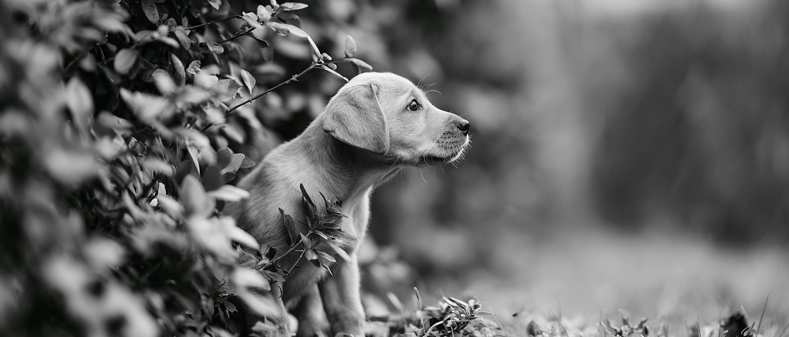

Criar é fazer viver mais.
Biotecnologia brasileira dedicada à longevidade de cães e gatos.


Vive intenso
Cada corrida, cada aventura, cada volta ao quarteirão. Manter esse ritmo exige energia bem aproveitada, digestão equilibrada e um sistema imune que acompanhe o que o animal faz da vida.
Soluções Allevo
Da necessidade do pet ao ingrediente que a atende.
Com a humanização, o tutor deixou de comprar ração e passou a comprar tempo de convívio. A Allevo é uma empresa de biotecnologia dedicada exclusivamente a cães e gatos, com ingredientes cientificamente formulados para sustentar imunidade, saúde intestinal e aceitação em todas as fases da vida.
Nossa ciência
Dizemos o que é spec, o que é literatura e o que ainda estamos medindo.
Somos uma empresa nova. Não temos décadas de publicação para invocar e não vamos escrever como se tivéssemos. Toda afirmação nossa cai em um destes três níveis — e o nível fica visível.
Aprender e Explorar
Conteúdo técnico para quem formula.

Betaglucanas em pet food: o que a ciência mostra
Nem todo betaglucano é lido pelo sistema imune da mesma forma — a diferença está na ramificação, não no número no rótulo.
Imunossenescência: o pet sênior pede formulação própria
A competência imune declina com a idade, e tratar o alimento sênior apenas como "menos calorias" ignora o principal motor de morbidade nessa fase.
Umami tem ponto certo, não máximo
Palatabilidade em pet é curva com pico, não escada — e o pico do gato fica muito abaixo do pico do cão.
Material técnico
Longevidade não é um claim. É uma decisão de formulação.
O mercado pet brasileiro amadureceu: o tutor já não compra ração, compra tempo de convívio com o animal dele. Reunimos as cinco razões pelas quais longevidade está deixando de ser posicionamento de marketing para virar critério técnico na mesa de quem desenvolve produto.
- O pet vive mais — e adoece de outras coisas.
- Imunossenescência é o motor silencioso da morbidade sênior.
- O tutor já mudou o vocabulário: pergunta por qualidade de vida, não por proteína bruta.
- Estrutura molecular decide o resultado, não o percentual do rótulo.
- Longevidade tem margem, se for sustentada tecnicamente.
Fale conosco
Traga a sua formulação. Nós trazemos o trial.
Começamos por uma conversa técnica e uma amostra. O teste é conduzido com o seu time, na sua matriz, com o seu protocolo.